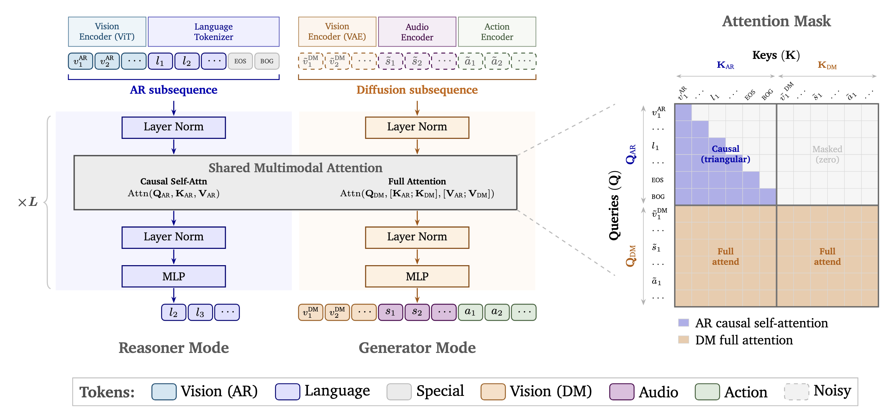

Paper Reading · Robotics World Models
Cosmos 3：把 VLM、视频生成、世界模拟和动作模型合成一个 MoT
Cosmos 3 的核心不是“又一个视频生成模型”，而是把 理解世界、生成未来、解释动作、输出动作 放进同一个 token 序列和同一个 Mixture-of-Transformers 里。它最有价值的地方，是把 action 当成和 video/audio 一样的 diffusion modality， 让 forward dynamics、inverse dynamics、policy 只是同一条序列里 clean/noisy token 的不同摆法。
0. 一句话结论
痛点：Physical AI 里 VLM、视频生成器、前向动力学模型、逆动力学模型、VLA/WAM 通常是分裂的系统，导致“看懂世界”“想象未来”“执行动作”之间要靠胶水代码转译。 核心招：Cosmos 3 用 MoT 把 AR Reasoner 和 diffusion Generator 放进一个统一序列：语言和 ViT 视觉 token 走因果自回归，VAE 视频、音频、动作 token 走 rectified-flow denoising，Generator 可以 attend 到 Reasoner 上下文。 效果：技术报告称其在发布时达到开源 T2I/I2V 领先、Cosmos-HUE 上开源视频生成领先，并把 Nano 后训练成 DROID robot policy 后在 RoboLab/RoboArena 取得强结果。 代价：训练和部署成本巨大，动作语义仍依赖 domain-aware projection、数据分布和 prompt/schema，安全关键控制不能把视频生成分数当作仿真可信度。
- 这篇到底在解决什么
- 它试图把 Physical AI 的“世界模型平台”做成一个 foundation model：同一模型既能回答视频问题，也能生成视频/音频，也能做动作条件 rollout，还能后训练成 robot policy。
- 核心 insight
- 不要把 action 当成外部控制参数，也不要只把 video 当成输出。把 state transition、future observation 和 action chunk 全部放进同一个 diffusion subsequence，任务就变成“哪些 token 是 clean condition，哪些 token 要 denoise”。
- 我会怎么读
- Cosmos 3 是一个系统级论文：架构、数据、训练、serving、evaluation 都在回答同一个问题 - 如何让世界模型成为 Physical AI 的可复用底座，而不是一个 demo generator。
1. 论文定位
Cosmos 3 属于 omnimodal world model / world-action model platform。它不是单纯 T2V，也不是单纯 VLA。 论文把目标任务覆盖成一张大网：multimodal understanding、spatial/temporal/physical reasoning、T2I、T2V、I2V、V2V、audio-video generation、video transfer、forward dynamics、inverse dynamics、robot policy。
和主流 baseline 的关键差异在于：很多模型把 VLM、生成器、policy head 分成几套系统；Cosmos 3 则把它们变成统一 token packing 和统一 attention mask 的不同运行模式。 Reasoner 表面上像 Qwen3-VL 类 VLM，Generator 表面上像 diffusion transformer，但二者在一个 MoT block 内用共享 multimodal attention 接起来。
| 范式 | 典型做法 | Cosmos 3 的差异 | 真正收益 |
|---|---|---|---|
| VLM | 图像/视频 + 文本 -> 文本 | 保留 AR Reasoner，支持 grounding、temporal localization、physical plausibility、action CoT | 生成前可以先把短 prompt 扩成结构化世界状态 |
| Video generator | 文本/图像条件 -> 视频 latent denoise | 视频、音频、动作都放进 diffusion subsequence | 生成不只出 pixels，也能携带控制和状态转移接口 |
| Forward dynamics | \(s_t,a_t\to s_{t+1}\) | clean action tokens + noisy future video tokens | 同一个 Generator 做 action-conditioned rollout |
| Inverse dynamics | \(s_t,s_{t+1}\to a_t\) | clean video tokens + noisy action tokens | 从观察轨迹反推动作，适合 video-to-action 标注和分析 |
| Policy | observation + goal -> action | noisy action tokens 和 noisy future video tokens 一起 denoise | 动作和预期视觉后果在同一次 rollout 里对齐 |
2. 方法总览
Cosmos 3 的 pipeline 可以写成一条分叉但同序列的流：
text / image / video / audio / action
-> modality encoders
text: tokenizer
visual understanding: ViT encoder
visual generation: frozen video VAE
audio: frozen audio VAE
action: domain-aware projection
-> packed sequence
AR subsequence: language + ViT visual tokens
DM subsequence: VAE vision + audio + action tokens
-> MoT decoder blocks
AR tokens -> Reasoner tower -> next-token prediction
DM tokens -> Generator tower -> rectified-flow velocity prediction
DM full-attends to AR context; AR never attends to DM
-> output
text / image / video / audio / action chunk
模块图的文字版如下。设 batch size 为 \(B\)，AR 长度为 \(N_{ar}\)，diffusion 长度为 \(N_{dm}\)，hidden dim 为 \(d\)：
Language tokens L: [B, N_l] -> embed -> [B, N_l, d]
ViT visual tokens V_ar: [B, N_vit, d]
AR prefix S_ar: [B, N_ar, d]
VAE video/image tokens V_dm: [B, T', H', W', C] -> linear -> [B, N_v, d]
Audio tokens A_dm: [B, N_audio, d]
Action vectors X: [B, T_action, d_in^k] -> W_in^k -> [B, T_action, d]
DM sequence S_dm: [B, N_dm, d]
MoT block:
O_ar = causal_attn(Q_ar, K_ar, V_ar)
O_dm = full_attn(Q_dm, [K_ar; K_dm], [V_ar; V_dm])3. 关键创新点
3.1 MoT：不是一个 tower 硬吃所有 token
旧方法为什么不行：VLM 的 next-token objective 和 video/audio/action 的 denoising objective 训练信号不同。 如果所有 token 共用完全相同的 LayerNorm/MLP/attention projection，容易出现两类问题：语言生成能力被 diffusion 训练冲坏，或者生成 token 无法得到足够的连续空间建模能力。
它怎么改：每个 transformer block 有 reasoner pathway 和 generator pathway。AR token 走 Reasoner，DM token 走 Generator； 两路有独立 LayerNorm、MLP 和投影参数，但在 attention 里让 Generator 可以读到 AR 上下文。
为什么有效：AR 路保留 VLM 的语义和语言能力；DM 路学习连续 latent 的 denoising dynamics。 Generator 可以使用 Reasoner 提供的 scene layout、object relation、physics intent，但 AR 不被 noisy diffusion token 反向污染。
代价/限制：MoT 近似把参数翻成双路，Nano/Super 的“dense backbone”和“MoT 总参数”口径容易混淆，训练和 serving 显存都更重。
3.2 Action token：把控制变量变成 diffusion modality
旧方法为什么不行：只用视频训练，模型只能学“自然会发生什么”，不能学“施加某个动作后会发生什么”。 VLA policy 直接输出动作，往往又缺少与未来视觉后果对齐的世界模型接口。
它怎么改：Cosmos 3 把 action 当作核心 modality。动作 token \(a_t\) 表示相邻视觉状态 \(v_{t-1}\to v_t\) 的转移。 对机器人、自动驾驶、camera motion、egocentric hand motion，先用相对 SE(3) pose、gripper state、joint/action channel 组成紧凑向量，再用 domain-specific projection 送入共享 latent action space。
为什么有效：action token 成为视觉世界和可执行控制之间的桥。Forward dynamics、inverse dynamics、policy 不再是三套模型，而是 clean/noisy token 的三种排列。
代价/限制：action 的物理语义没有天然统一。论文用 domain id、不同输入/输出投影、normalization 处理异构维度，但跨 embodiment 泛化仍依赖数据覆盖和后训练。
3.3 3D mRoPE：把视频、音频、动作放到同一个物理时间轴
旧方法为什么不行：视频 latent、音频 hop、动作控制频率并不一样。只按 token index 编位置，会把 16 FPS 和 30 FPS 的相同真实时间误认为不同时间距离。
它怎么改：每个 token 有 \((t,h,w)\) 坐标。语言退化成 1D RoPE；视频有时空坐标；音频和动作只用时间坐标 \((h=w=0)\)。 时间步长按真实采样率调制：以 24 FPS 视频经 4x temporal compression 后的 \(TPS_{base}=6\) 为基准。
为什么有效：模型看到的不再是“第几个 token”，而是“发生在真实时间轴的哪个位置”。这对 action-conditioned rollout 和 audio-video sync 都重要。
实现细节：论文还在 AR 和 DM token 的 temporal index 中间插入固定 gap 15000，避免文本末尾和首帧视觉 token 位置太近造成初始帧过饱和或棋盘 artifact。
3.4 Structured JSON prompt upsampling：生成前先把世界状态写清楚
旧方法为什么不行：短 prompt 对 Physical AI generation 太稀疏，缺少对象、空间布局、动作时序、camera motion、audio cue、duration/FPS 等控制变量。
它怎么改：Cosmos 3 训练 Generator 时使用结构化 JSON caption；推理时用 Claude Opus 或 Cosmos 3 Reasoner 把短 prompt upsample 成同样格式。 这个 upsampler 不是文风润色，而是在生成前补充 scene state 和 temporal program。
为什么有效：它减少训练/推理 prompt 分布差异。对机器人/世界模型来说，这也让“任务意图”和“世界状态描述”变得可检查。
3.5 多阶段数据课程：先学理解，再学生成，再学动作
旧方法为什么不行：如果一开始就把 language、video、audio、action 全混在一起，模型既要学视觉语义，又要学高维生成，又要学动作接口，优化目标太杂。
它怎么改：Reasoner 先做 22.0M pre-training + 2.2M SFT；Generator 从 Reasoner 权重初始化，先做 image/video/audio pre-training，再 mid-training 引入 action 和 transfer，最后对 T2I、I2V、DROID policy 等任务后训练。
为什么有效：语义理解成为 Generator 的初始化先验，动作中训则形成可复用 action-domain prior。论文的 PT-init vs MT-init 实验基本就是在验证这一点。
4. 训练和推理流程
Reasoner 训练
- 输入：图像/视频/text conversations，经过 tokenizer 和 ViT encoder 进入 AR subsequence。
- 输出：文本 token，训练目标是 next-token prediction。
- 数据：约 24.2M samples，其中 pre-training 22.0M，SFT 2.2M。SFT 更偏 Physical AI，包含 robotics、driving、smart infrastructure、spatial/temporal reasoning。
- 优化：pre-training peak LR 为 \(5\times 10^{-5}\) 给 LM/projector，ViT 为 \(5\times 10^{-6}\)，10% warmup，AdamW，global grad clip 1.0。
Generator 训练
- 输入：AR prefix + DM tokens。DM 里 clean conditioning token 在前，noisy target token 在后。
- 输出：velocity field \(v_\theta\)，最后通过 diffusion/flow sampling 得到 image/video/audio/action。
- pre-training：T2I、T2V、I2V、V2V、audio-video；256p/480p/720p 多分辨率，固定 74K token context packing。
- mid-training：继续保留 image/video/audio，同时加入 action 25%、general transfer 20%、driving transfer 5%。
- post-training：Super 专门后训练 T2I/I2V；Nano 后训练 DROID policy。
推理
- Reasoner：只启用 AR 路，输入 text/image/video，输出 text。vLLM 路径使用 OpenAI-compatible chat completions。
- Generator：启用 AR + DM。默认视觉/音频生成常用 50 denoising steps，guidance 6，shift 10；T2I/I2V post-trained checkpoint 有各自参数。
- Action forward/inverse dynamics：论文默认 50 steps、guidance 1、shift 5；DROID policy 为了低延迟改成 4 steps、guidance 3、shift 5，并跳过视频 latent decode。
- DROID policy 输入：当前 proprioception + 三视角视觉拼成 540x640 canvas；输出 32 个未来 absolute joint-position actions，15 Hz，部署在 2 张 RTX Pro 6000 上。
5. 公式和算法逐行讲解
公式 1：相对位姿 pseudo-action
\(T_t\in SE(3)\) 是某个 ego camera 或 end-effector 在时刻 \(t\) 的 pose。 \(\Delta T_t\) 表示从上一状态到当前状态的相对运动。实现里通常拆成 3D translation + 6D rotation representation。 这避免把底层控制器 PID、关节伺服细节硬塞给模型，让模型先学几何层面的状态转移。
公式 2：domain-aware action projection
\(x\in\mathbb{R}^{d^{(k)}_{in}}\) 是第 \(k\) 个 embodiment/domain 的 normalized action vector。 \(z\in\mathbb{R}^{d_{model}}\) 是送进 MoT 的 action token。不同 embodiment 有不同 \(W_{in}^{(k)}\) 和 \(W_{out}^{(k)}\)，MoT backbone 共享。 代码里对应 `domain_name -> domain_id/raw_action_dim`，例如 `av=9`、`camera_pose=9`、`bridge_orig_lerobot=10`、`droid_lerobot=10`、`robomind-franka-dual=20`、`agibotworld=29`。
公式 3：统一 generation mode 的 token packing
\(S_{AR}\) 是语言和可能的 ViT vision prefix，\(\tilde v\) 表示加噪的 vision latent，\(\tilde s\) 表示加噪音频 token。 对 action 来说，把 clean/noisy 位置换一下就是三种任务：Forward dynamics 用 clean action、noisy future vision；inverse dynamics 用 clean vision、noisy action；policy 同时 denoise action 和 future vision。
公式 4：MoT 双流 attention
AR token 只看 AR 自身的过去，保持 VLM 的因果生成语义。 DM token 可以看完整 AR context 和 DM token，因此生成器能利用文本/视觉理解上下文，也能在待 denoise 的视频、音频、动作 token 之间建立全局一致性。 关键是 AR 不读 DM，避免 noisy target 反向泄漏到 reasoner。
公式 5：rectified-flow objective 和时间调制
\(x_0\) 是 clean target latent，\(\epsilon\sim\mathcal{N}(0,I)\) 是噪声，\(v_\theta(x_\sigma,\sigma,c)\) 学预测常速度 \(v^\*\)。 loss 是 masked MSE，clean conditioning token 不计入 loss。\(s\) 是 flow shift，论文在 256p/480p/720p 使用不同 shift 以适配分辨率。 \(\delta t\) 则用于 3D mRoPE，把不同 FPS、audio hop、action sampling rate 对齐到物理时间。
6. 训练-推理细节对齐
| 点 | 训练时 | 推理时 | mismatch 风险 |
|---|---|---|---|
| Prompt | 结构化 JSON caption，含 scene、actions、duration、FPS、resolution | 短 prompt 先 upsample 成 JSON | upsampler 质量会直接影响生成，失败时不是 generator 单独的问题 |
| Clean/noisy token | 按任务随机设定 clean condition 和 noisy target | 按用户任务固定 clean/noisy 布局 | 未覆盖的 conditioning pattern 会退化 |
| Resolution/FPS | 256p/480p/720p，10-30 FPS，mRoPE FPS modulation | 同样要求输入合法 resolution/FPS | 超出训练 envelope 的长视频和高分辨率更容易 artifact |
| Action | per-domain normalizer，大致缩到 [-1,1]，action loss 10x | 需要指定 domain、raw_action_dim、action_chunk_size | domain id 或 normalizer 不匹配会造成动作尺度错误 |
| Policy latency | 可用多步 diffusion 学动作分布 | DROID policy 只采样 4 steps，且可跳过视频 decode | 低延迟靠 distillation/少步采样，可能牺牲多峰动作质量 |
| Evaluation | 大量内部和公开数据混合 | 外部用户只能访问部分 checkpoint、cookbook、gated HF 模型 | 复现完整训练表格几乎不可行，只能复现实验子集或做下游 SFT |
7. 实验复盘
论文实验非常大，应该分三层看：Reasoner 是否真的强，Generator 是否真的能做 Physical AI video，action mid-training 是否真的给 policy/FD/ID 带来可迁移先验。
Reasoner
Cosmos 3 Reasoner 覆盖 48 个 benchmark，分 general、robotics、smart infrastructure、driving。 Super 的 group average 大致为 general 73.7、robotics 57.8、smart infra 62.6、driving 79.3；Nano 为 general 69.6、robotics 55.1、smart infra 61.0、driving 76.0。 解读上要注意：它在 Physical AI 相关任务更有优势，general VLM 上仍会被 Gemini 这类闭源大模型压住。
Video / image generation
T2I 上，Cosmos3-Super-Text2Image 在 UniGenBench All 为 91.36，报告称在 Artificial Analysis open-weight T2I leaderboard 排名领先。 视频上，PAIBench-G T2V/I2V 中 Cosmos3-Super overall 为 80.0/82.8，Nano 为 79.4/82.7；Cosmos-HUE human eval 中 Super T2V/I2V 为 89.3/89.6，Nano 为 87.6/88.6。 这些结果说明 Cosmos 3 的视觉生成不是只靠美学分，而是在物理/几何/语义维度上也有竞争力。
Action generation and policy
action 结果是这篇对 WAM 最重要的证据。DROID forward dynamics 中，Ctrl-World PSNR 为 22.99，Cosmos3-Nano PT-init 为 23.24，MT-init 后到 25.52，Super MT-init 到 26.04。 RoboLab policy 上，Cosmos3-Nano-Policy-DROID 的 overall success rate 在 vague/default/specific 指令下为 20.6/36.8/39.7，高于 \(\pi0.5\)、DreamZero 等对比。 LIBERO-10 新 embodiment 适配里，MT-init 在 500 iter 就有 24.6% success，而 PT-init 为 0.0%；到 2000 iter，MT-init 97.4%，PT-init 95.2%。
批判性看法
- 算力和数据规模极大：Nano Generator pre-training 用 31.05T tokens 和 1024 GB200，Super 用 17.86T tokens 和 2048 GB200。这不是普通实验室可复现 recipe。
- 很多评测依赖内部数据、内部 judge 或动态 leaderboard。结论方向可信，但精确排名需要独立复测。
- 视频生成指标和真实控制安全之间还有距离。PSNR/HUE/PAIBench 能看 rollout 一致性，不能证明模型就是可靠物理仿真器。
- RoboArena 排名是 2026-05-30 2:40 p.m. 的时间点结果，后续会变。把它当当时证据，不该当永久结论。
8. 代码和实现笔记
我看了两个公开仓库：`NVIDIA/cosmos` 和 `NVIDIA/cosmos-framework`。 前者更像入口、cookbook 和 serving 文档；后者包含训练/推理框架、action 数据处理、SFT recipe、inference pipeline。
| 实现点 | 公开代码里看到什么 | 意义 |
|---|---|---|
| 模型配置 | `OmniMoTModelConfig` 含 `rectified_flow_training_config`、`rectified_flow_inference_config`、`joint_attn_implementation=two_way`、LoRA knobs、activation checkpointing | MoT 和 flow 不是论文口号，而是配置系统的一等对象 |
| action inference | `get_action_sample_data` 读取视频和 action JSON，按 `model_mode` 构造 sequence plan | forward/policy/inverse 在代码里也是 mode，而不是完全不同模型 |
| domain id | `EMBODIMENT_TO_RAW_ACTION_DIM` 包含 `av=9`、`camera_pose=9`、`bridge_orig_lerobot=10`、`droid_lerobot=10`、`robomind-franka-dual=20`、`agibotworld=29` | 异构 action space 靠 domain-aware 维度和 projection 管理 |
| action prompt | `ActionPromptJsonFormatter` 输出 `cinematography`、`actions`、`duration`、`fps`、`resolution`、`aspect_ratio` | action 任务也走结构化 caption/schema，而不是裸文本 prompt |
| action padding | `pad_action_to_max_dim` 把 `[T,D]` pad 成 `[T,max_action_dim]` | 下游可以统一 batch，但必须小心 mask 和 normalizer |
| serving | Reasoner 用 vLLM；Generator 用 Diffusers、Cosmos Framework 或 vLLM-Omni；action modes 支持 `forward_dynamics`、`inverse_dynamics`、`policy` | 研究路径和生产 API 路径分开，和普通 demo repo 不一样 |
【不确定】参数量口径有一个明显差异：官方 developer blog 写 Nano 为 8B、Super 为 32B；论文和 GitHub README 写 Nano 是 16B MoT、Super 是 64B MoT，并说明 Nano/Super 分别基于 dense 8B/32B transformer。 合理解释有两种：一是 blog 写的是 dense backbone/active tower 口径，README 写的是 MoT 总参数；二是发布材料不同步。验证方式是查看 Hugging Face config 的 full parameter count 和各 tower parameter count。
9. 可复现清单
- 硬件：Linux + NVIDIA GPU。官方文档要求 CUDA 13 或 12.8 对应的 torch/vLLM 版本；Nano 推理也需要大量显存。
- 模型访问：需要 Hugging Face token，并接受 Cosmos3 gated model repos 的条款。
- 开发入口：Generator research 用 Diffusers `Cosmos3OmniPipeline`；production generation 用 `vllm/vllm-omni:cosmos3`；Reasoner serving 用 vLLM + `vllm-cosmos3`。
- SFT：Cosmos Framework 提供 Vision SFT、LoRA SFT、Reasoner alignment SFT recipe。示例 recipe 测试环境是 8x H100 80GB。
- 数据格式：Generator 强依赖结构化 JSON caption；action 任务需要 `domain_name`、`model_mode`、`action_chunk_size`、`fps`、`vision_path`、可选 `action_path`。
- normalization：action 需要 per-domain stats，公开代码支持 quantile、meanstd、minmax。不要把不同机器人动作直接混成裸数值。
- 采样：audio-visual 默认 50 steps；DROID policy 为 4 steps。复现结果时必须记录 steps、guidance、shift、negative prompt、seed、resolution、FPS。
- guardrails：vLLM-Omni 默认可能启用 prompt/output guardrails，benchmark 或研究复现时要记录是否关闭。
- 论文没完全写清但通常必须有：数据去重阈值细节、各 domain normalizer 的具体统计源、prompt upsampler 版本、失败样本过滤规则、policy server 的控制闭环延迟。
10. 对 FastWAM / 具身操作的启发
对 FastWAM 最可复用的不是 Cosmos 3 的规模，而是 action 表征和任务统一方式。
- Action 不一定要是低层 motor command。Cosmos 3 用相对 pose + gripper/joint state 作为 pseudo-action，说明 WAM 可以先建模“可解释状态转移”，再接底层控制器。
- FD/ID/policy 可以共享一个序列模型。你的 FastWAM 可以把 one-shot demonstration 拆成 clean observation、clean/noisy latent action、noisy future latent 的组合，而不是单独训练三个 head。
- intent/progress 可以作为 AR context，而 action 放 DM。Reasoner 负责把任务、阶段、约束写成结构化上下文；Generator 负责 denoise action/future state。这样 intent 不必直接是 action token，可以是 action token 的条件。
- domain-aware projection 是小模型可学版本。如果你的机器人种类少，可以不用 Cosmos 这么大，只保留 \(W_{in}^{(k)}, W_{out}^{(k)}\)、mask、normalizer、domain prompt。
- one-shot 样本可以建模为局部 transition program。把示范分成 \((o_{t-1}, a_t, o_t)\)，学习 \(a_t\) 是“让 \(o_{t-1}\) 接近 demonstration progress 的 latent transition”，比直接模仿绝对动作更稳。
我对 FastWAM 的建议：不要先追 Cosmos 3 式 omnimodal 大一统。先复刻它最小的结构思想： AR context 写任务和 progress，DM tokens 预测 latent action + latent next state，FD/ID/policy 共用 mask 和 sequence plan。
11. 可能的改进方向
- 显式 progress token ->把 task phase / remaining steps 作为 AR token 或单独 latent condition；预期收益是长程任务更稳；风险是标注成本；实验用 DROID/LIBERO 分阶段任务做 ablation。
- action confidence / uncertainty head ->在 policy denoising 时预测动作方差或 ensemble disagreement；收益是闭环可拒绝执行；风险是校准困难；实验看失败前 uncertainty 是否上升。
- object-centric latent state ->把 VAE pixel latent 换成 object slots / 3D points 作为辅助 DM token；收益是 manipulation contact 更可控；风险是表示抽取不稳定；实验用 cloth/stack/push 等 contact-heavy tasks。
- domain adapter 而非只靠 projection ->给 action tower 加小 LoRA/domain adapter；收益是新机器人快适配；风险是破坏共享先验；实验比较 500/1000 iter adaptation。
- simulation consistency loss ->policy 输出动作后用轻量 forward model 或 simulator 校验 future latent；收益是少走物理不可能动作；风险是 simulator bias；实验看 closed-loop success 和 safety violation。
- prompt upsampler 可验证化 ->让 Reasoner 输出 JSON 同时输出 confidence 和约束检查；收益是减少错 prompt 造成的错生成；风险是 pipeline 更复杂；实验看生成失败归因和人工修正率。
12. 速读备忘卡
- Cosmos 3 是 omnimodal world model：language、image、video、audio、action 都在一个框架里。
- 核心结构是 MoT：AR Reasoner + diffusion Generator。
- AR 只 causal self-attend，DM full-attend 到 AR + DM。
- Action token 表示 \(v_{t-1}\to v_t\) 的状态转移，不只是 policy 输出。
- Forward dynamics、inverse dynamics、policy 是 clean/noisy token 布局的差异。
- 异构动作靠 domain-aware projection、raw_action_dim、normalization、domain id 管。
- 3D mRoPE 用真实时间轴对齐视频、音频、动作。
- 训练先 Reasoner，再 Generator，再 action/transfer mid-training，再任务后训练。
- 最强证据不是某个视频分数，而是 MT-init 对 FD/ID/policy 和新 embodiment adaptation 的提升。
- 最大限制是规模、内部数据、评测可复现性，以及视频生成分数到真实物理可信度之间的缺口。